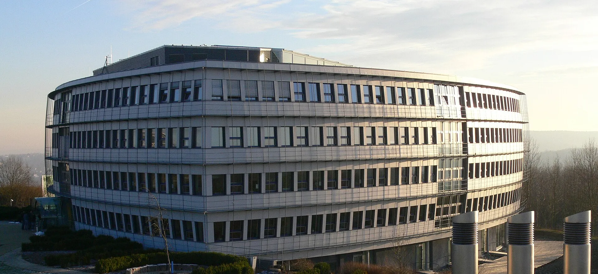
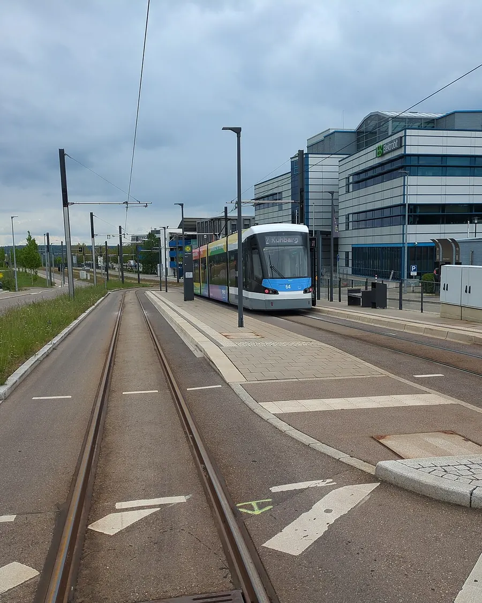
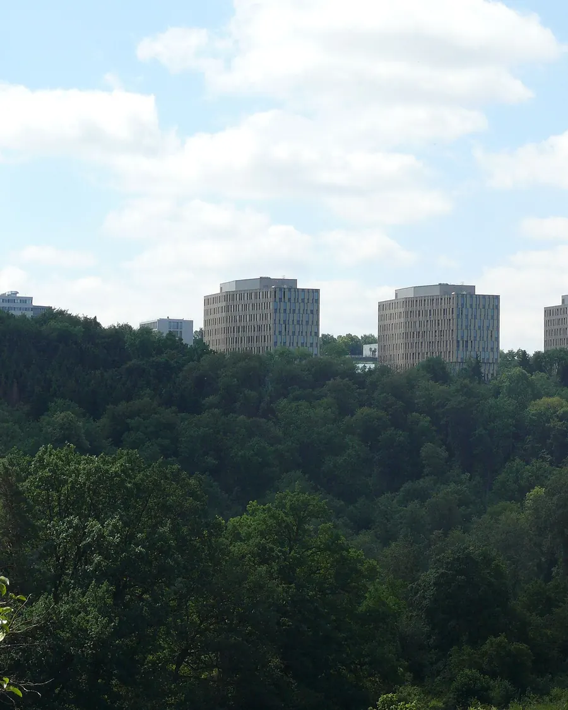

Gebäude, die einfach laufen.
Wir übernehmen das komplette Facility Management Ihrer Immobilie – Objektbetreuung, Haustechnik, Brandschutz und Außenanlagen. Ein Ansprechpartner, der vor Ort ist.
Objektanfragen

( Was wir tun )
Wir kümmern uns um alles, was ein Gebäude braucht – damit Ihre Mieter nie merken, wie viel Arbeit darin steckt.
( Leistungen )
Komplettes Facility Management.
Aus einer Hand.
-
Regelmäßige Rundgänge, Kleinreparaturen, Schlüssel- und Zugangsorganisation, Ansprechpartner für Mieter. Wir sehen Probleme, bevor sie jemand meldet.
-
Wir koordinieren Wartungen, betreuen die Anlagen und halten jede Prüffrist im Blick – von der Aufzugsprüfung bis zur DGUV V3.
-
Flucht- und Rettungswege frei, Feuerlöscher, Rauchabzug und Brandmeldeanlage geprüft, Brandschutzordnung aktuell. Wir organisieren, dokumentieren lückenlos und begleiten Begehungen.
-
Grünpflege, Wege und Parkflächen, Räum- und Streudienst – damit jeder sicher ankommt, auch an einem Januarmorgen.
-
Wir steuern Reinigung, Entsorgung und Handwerksbetriebe, kontrollieren die Leistung und sind die eine Nummer für alles.
-
Etwas fällt aus? Wir nehmen die Meldung auf, beheben selbst oder holen den richtigen Fachbetrieb – und melden zurück, wenn es erledigt ist.
( Praxisbeispiel )
Science
Park Ulm.
Am Oberen Eselsberg ist seit den 1980er-Jahren die Wissenschaftsstadt gewachsen: Forschungsinstitute, Labore und Entwicklungszentren namhafter Unternehmen. Hier betreuen wir Objekte im kompletten Facility Management.
Weiter scrollen →
( Was wir dort leisten )
- Objektbetreuung & Hausmeisterdienst
- Haustechnik & Wartungsmanagement
- Brandschutz & Prüffristen
- Außenanlagen & Winterdienst
- Steuerung von Reinigung und Fachfirmen

* Angabe der IHK Ulm, Stand 2014

( Science Park III )
40 Hektar,
die gerade wachsen.
Neue Labor- und Bürogebäude am Eselsberg. Neue Technik – wir sind bereit.
( Ablauf )
Vier Schritte bis zum
ruhigen Betrieb.
Begehung
Wir sehen uns Ihr Objekt gemeinsam an: Technik, Flächen, Prüfpflichten, offene Punkte.
Objektakte
Anlagen, Fristen und Ansprechpartner übersichtlich an einem Ort dokumentiert.
Laufender Betrieb
Feste Rundgänge, schnelle Reaktion bei Störungen, Fachfirmen im Griff.
Kurzer Bericht
Regelmäßig auf einen Blick: was erledigt ist, was geplant ist, was ansteht.
( Kontakt )
Sprechen wir überIhr Gebäude. ↗